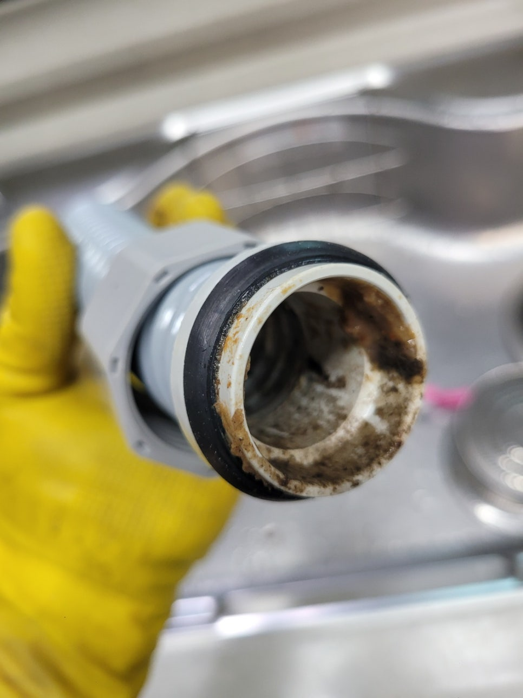
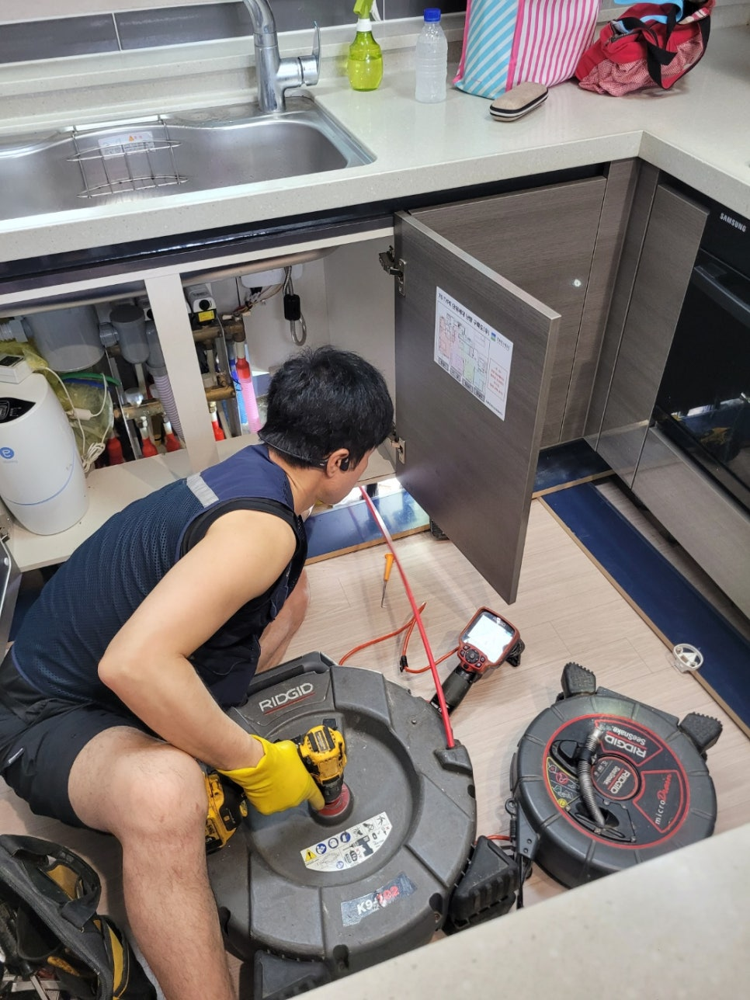
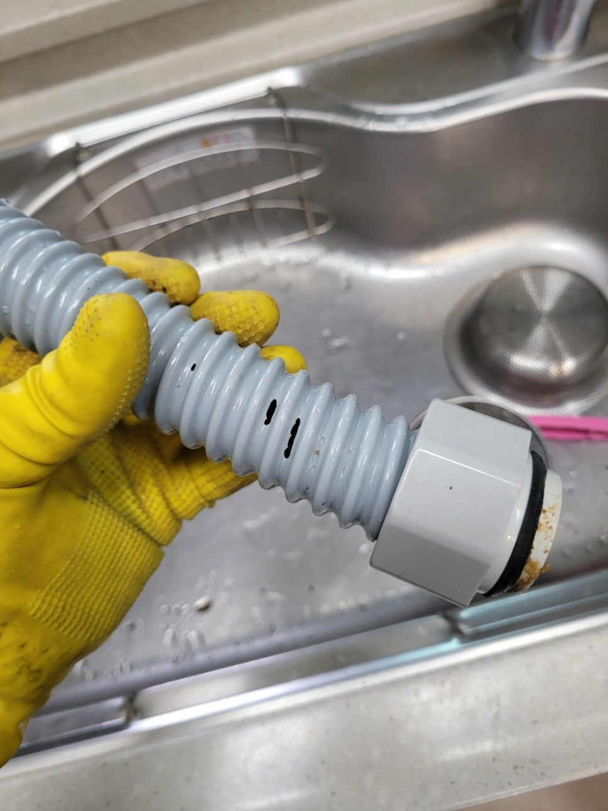
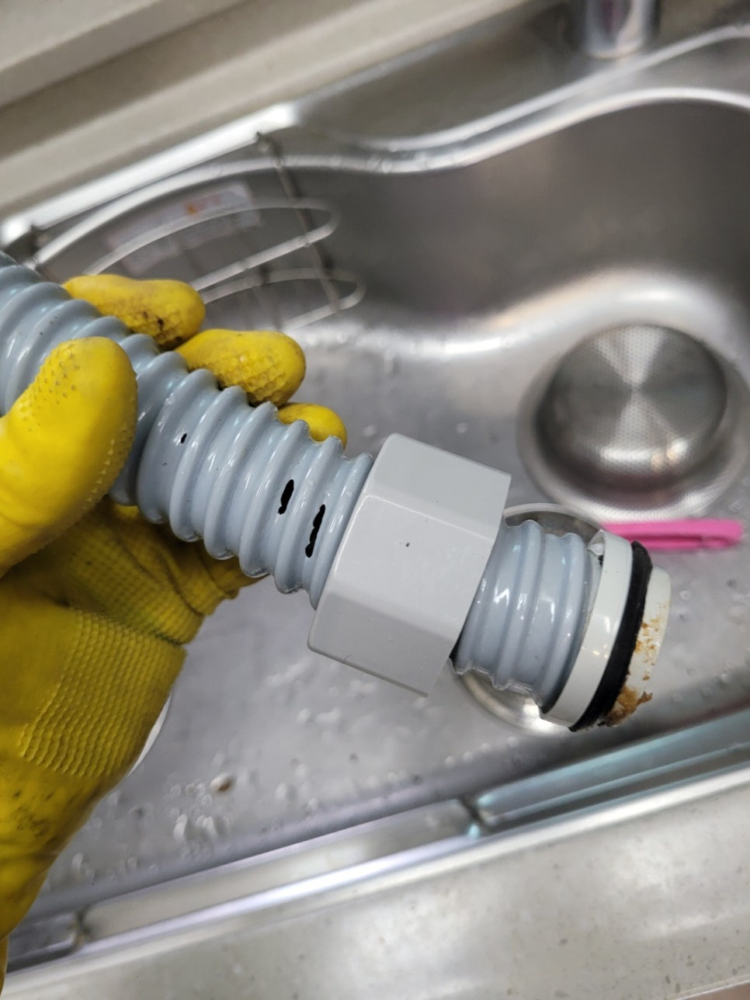
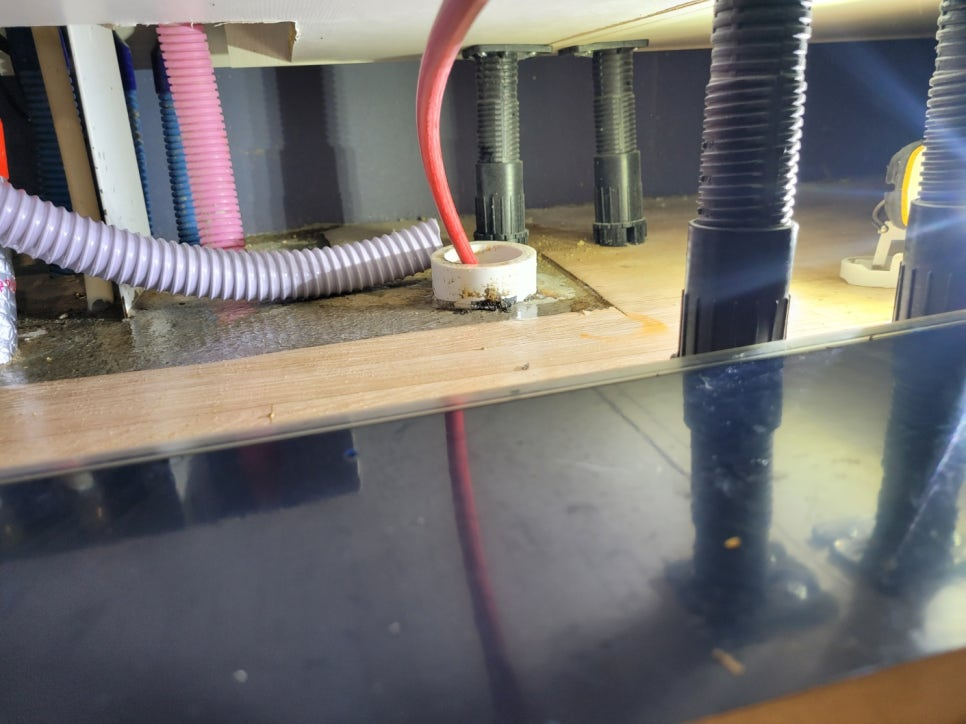
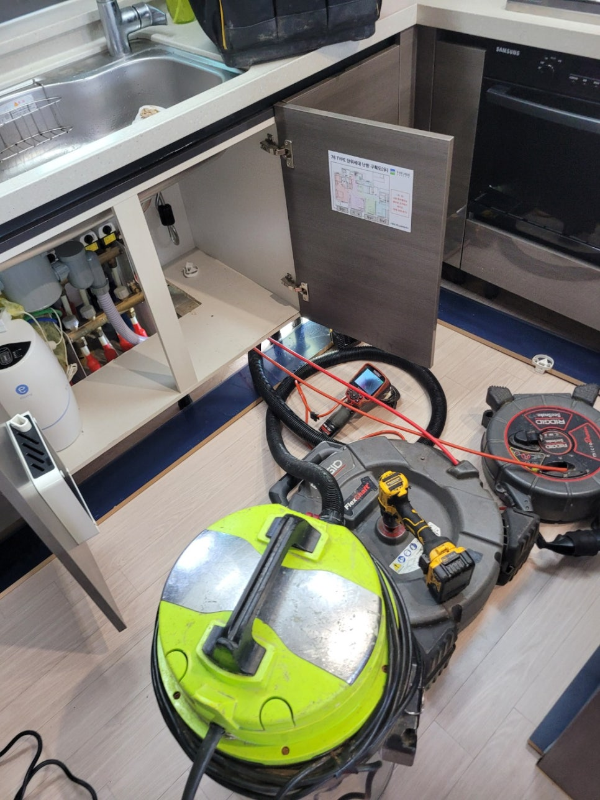
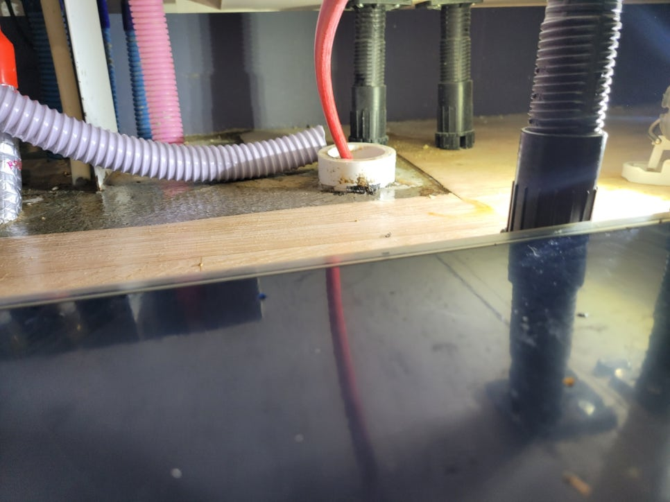

🏠 기흥 보라동 싱크대배수관막힘 상하동 배관역류 뚫는업체
용인 기흥 싱크대막힘 전문 시공 후기

📋 작업 개요
- 위치: 용인 기흥, 기흥, 용인
- 서비스 유형: 싱크대막힘, 변기막힘, 하수구막힘, 배관막힘, 맨홀막힘, 누수수리, 역류해결, 뚫는업체, 배관청소
- 작업 일시: 2025. 7. 24. 21:14
- 업체명: 하수구수사대 (010-5615-2118)
🔍 문제 상황
안녕하세요.
배관전문업체 하수구수사대 입니다.
기흥 보라동 싱크대배수관막힘 상하동 배관역류 뚫는업체
일상 생활에서 생각지도 못한 문제가 나타나게 되면 모든 분들이 걱정하시죠.
특히나 물을 많이 사용하는 주방 또는 화장실에서 어느 순간 막힘 문제가 발생해 물을 사용할 수 없는 상황일 때에는 서둘러 전문가에게 연락하시는 게 제일 좋은 방법이에요.
주방 싱크대에 물이 고이는 현상이 발생하면 밥을 짓고 식재료를 다듬는 등의 일에 차질이 빚어지죠.
거기다 사용한 그릇을 설거지 하는 것도 힘들어지기 때문에 막히기 시작하면 최대한 빨리 전문 업체를 부르시는 게 좋아요.
지난 주에도 한 고객님 댁에 싱크대 막힘 현상이 발생하여 근본적인 문제를 찾아 해결하고 왔답니다.
이 댁은 싱크대를 교체한 지 얼마 안 되었는데 이같은 현상이 발생한다는 것이 의아했는데요.
혼자 힘으로 해결하지 못하는 부분이라서 전문 업체인 저희들에게 전화하신 듯 합니다.
저희가 현장에서 첫 번째로 점검한 지점은 싱크대 하부장 아래쪽이었어요.
저희가 봤을 땐 벌써 물이 넘쳐 흘러서 축축하게 젖어있을 뿐만 아니라 그 양도 상당히 많아보였습니다.

🔎 원인 분석
💡 전문가 진단: 정밀 진단 장비를 사용하여 슬러지의 고착 여부를 판명하고 타격/세척 작업을 실시했습니다.
여기서 계속 방치하면 곰팡이가 피는 것은 물론 아랫 세대에도 누수 문제가 발생할 수 있다 보니 신속하게 작업을 진행했어요.
본격적인 작업을 하기 전에 막힌 싱크대에 이어져 있는 주름관을 해체해서 살펴보니 예상대로 상당량의 이물질이 쌓여 있는 모습이었어요.
까만 것들이 찌꺼기라고 보시면 되는데 이런 것들이 주름 사이사이에 달라붙어 굳어있는 상태입니다.
그리고 하수도 입구쪽까지 까만 얼룩들이 잔뜩 붙어있었기 때문에 완전히 없앨 수 있도록 석션기를 사용했습니다.
석션기는 주름관의 이물질 뿐만 아니라 하수관 내부에 쌓인 것들까지도 흡입 가능한 도구이며 이같은 막힘 현상이 발생했을 때 적합하죠.
이물질 때문에 입구 쪽이 막혀있는 상황에서도 이 석션기가 있다면 쉽게 해결할 수 있답니다.
본격적으로 배관을 뚫기 전 석션기로 배관 내부를 어느정도 청소해 주는데, 문제 해결에 적합한 방법을 파악하기 위한 단계로 보시면 되겠습니다.
석션기를 여러 번 작동시켰는데도 막힘 현상이 해결되지 않는 상태여서 하수관 속을 보다 정확하게 확인하기로 했습니다.
저희가 보유하고 있는 배관 내시경 카메라를 통해 더욱 깊은 곳의 상태를 파악하는 것인데요.
여기 보이는 사진에서는 전부 빨갛게 나타나고 있죠.
설비 헤드쪽에 전등이 달려있는데, 그 불로 기름때를 비추면 이런 빨간색으로 보인답니다.
그러니까, 배관 속에 기름찌꺼기가 잔뜩 쌓여있다면 모니터 상에서 빨갛게 나타납니다.
한 번 더 확실히 확인해 본 결과, 배관 청소가 시급한 듯 했습니다.

🔧 작업 과정
이번 현장에서 막힘 문제가 생기는 원인은 하수관 내부에 오랜시간 쌓여서 굳어진 음식물 찌꺼기들이라고 판단하게 되었습니다.
그래서 기름때를 제거하기에 좋은 도구를 이용해서 깔끔하게 청소해 드리기로 했죠.
이 작업을 할 때 필수인 전문 장비 플렉스 샤프트를 준비했습니다.
샤프트 케이블 끝 부분에는 붙어있는 헤드가 체인 형태로 되어 있어서 단단한 덩어리들도 잘게 분쇄하여 흡입이 되게끔 하는 것입니다.
샤프트로 잘게 부수면 처음에는 끄떡없던 이물질 덩어리들도 전부 배관 밖으로 밀어낼 수 있죠.
단, 배관의 상태와 덩어리의 크기를 계속 체크하며 기계를 움직여야 작업이 수월해집니다.
한 번 작업을 시작할 때마다 배관 내시경 카메라로 배수구 안쪽을 확실히 점검하고, 중간중간 석션작업도 꼼꼼하게 진행하여 기름찌꺼기 없는 청결한 하수관을 만들기 위해 최선을 다했습니다.
저희 업체는 겉으로 드러난 문제만 해결하고 끝내지 않습니다.
문제의 근본적인 원인을 알아내고 완전히 제거해서 싱크대 막힘 증상을 해결하고 배관 안쪽까지 꼼꼼히 훑어가며 남아있는 슬러지도 제거했습니다.
통수 테스트 결과, 물이 막힘 없이 잘 흐르는 것으로 보아 시공이 제대로 진행되었음을 알 수 있었답니다.
청소가 모두 완료되면 석션기에 연결된 통 안에는 배수관 내부에 축적되어 있었던 기름때가 담기게 됩니다.
내부를 살펴보면 아랫 부분에 여러 이물질들이 내려앉은 것을 보실 수 있을 거에요.
이런 것들은 하수관에 부으면 막힐 수 있어서 거름망을 이용해 알갱이들을 한 번 제거한 후 각각 처리해야 됩니다.
보통의 경우 여기까지 하면 작업이 종료됩니다.
이번에 방문했었던 현장은 주름관 자체가 아주 오래되고 낡은 상태였어요.
이 주름관도 새 제품으로 교환하고 나니 반복되었던 물고임이 깔끔하게 해결될 수 있었습니다.
가정의 싱크대가 반복적으로 막힌다면 시중에 파는 하수관 세정제만으로는 해결하기가 힘들어요.
뿐만 아니라 슬러지가 단단히 굳어있는 경우 또한 전문 장비를 써서 신중하게 제거해야 합니다.
전문업체의 도움을 받으셔야만 깔끔하게 문제가 해결됩니다.
그렇기 때문에 내시경 카메라나 배관 막힘 전문 도구를 갖고 있는 업체를 선택해야 빠르게 작업이 진행될 수 있다는 점을 잊지 마시기 바래요.


✅ 작업 완료
막힘 문제로 배관을 점검해야 하는 경우에는 실력과 장비를 보유하고 있는 저희업체에 연락주시면 확실하게 해결해 드릴게요!
하수구수사대 010 2340 2118
경기도 용인시 기흥구 동백중앙로 191 8층 c8736호
#보라동하수구막힘 #보라동싱크대막힘 #보라동싱크대역류 #보라동배수관막힘 #보라동배관뚫는곳 #보라동설비 #보라동맨홀막힘 #보라동하수구뚫는업체 #보라동변기막힘
#상하동하수구막힘 #상하동싱크대막힘 #상하동싱크대역류 #상하동하수구역류 #상하동화장실막힘 #상하동설비 #상하동하수구뚫는곳 #상하동하수구뚫는업체 #상하동변기막힘




⚠️ 베란다 누수 및 방수 관리 방법
- ✅ 비가 많이 올 때 창틀 주변이나 아래층 천장에 얼룩이 생기는지 정기적으로 확인해 보세요.
- ✅ 우수관 주변 실리콘 마감이 들뜨거나 깨진 틈새가 있는지 손상 여부를 수시로 체크하세요.
- ✅ 베란다 바닥 타일의 줄눈(메지)이 소실되면 그 틈으로 물이 침투하여 누수가 유발됩니다.
- ✅ 누수 의심 증상 발견 시 방치하면 아래층 손실이 커지므로 즉시 전문가의 진단을 받으십시오.
💡 핵심 정리
- 확실한 장비 작업(내시경 점검 및 샤프트 스케일링)으로 원인을 뿌리 뽑습니다.
- 작업 후 1년 이내에 동일한 부위 재발 시 100% 무상 A/S 서비스를 보장합니다.
- 서울 · 경기 · 인천 전 지역에 24시간 언제든 긴급 출동할 수 있도록 항시 대기 중입니다.
❓ 자주 묻는 질문 (FAQ)
🚨 용인 기흥 싱크대막힘 문제로 고민이신가요?
정확한 원인 진단과 확실한 시공으로 재발 없는 해결을 약속드립니다.
24시간 긴급 출동 | 서울 · 경기 · 인천 전지역 | 1년 내 재발 시 무상 A/S